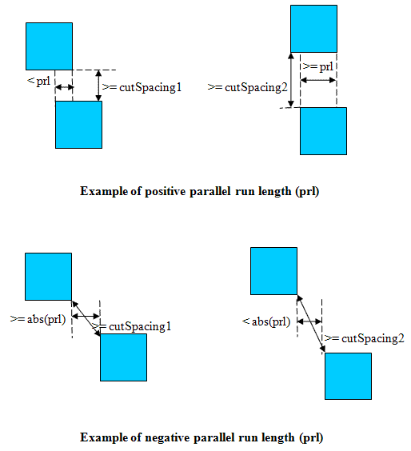

minEndOfLineCutSpacing
Specifies the spacing rules between cuts near the ends of lines. This increased spacing is required when neighbor metal lines intersect with the regions defined on either side of the line. The cut must have specific metal enclosures. The required spacing is dependent on the parallel run length (prl) with neighbor cuts.
It is a layer-pair constraint, where the second layer should be the metal layer above the cut layer. In addition, the placement of the cut within that layer governs the spacing of the cut.
In some processes, the spacing can also be specific to the cut class of each cut. Therefore, it is necessary to specify a list of cut classes and the required spacing from the named cut class to each of the cut classes in the list.
minEndOfLineCutSpacing Quick Reference
Value Types
minEndOfLineCutSpacing constraint has the following value type:
Parameters
-
cutClass(optional) specifies the dimensions of the cut layer’s cut class if this constraint is specific to a particular cut class. -
width(required) specifies that the rule only applies if the width of the end-of-line is less than the given width. -
parallelRunLength(required) If the parallel run length between the two cuts is< prl,cutSpacing1is required. However, if the parallel run length is>= prl,cutSpacing2is required.
 -
enclosure(required) The two values ofenclosureareeolEnclosureandotherEnclosure. The rule only applies if the enclosure on the end-of-line edge is< eolEnclosureand the enclosure on one of the other cut edges orthogonal to the end-of-line edge isotherEnclosure. -
extension(required) specifies a search region along the wire, defined by extendingsideExtalong the end-of-line edge, away from the wire, andbackwardExtalong the orthogonal edge, where the cut has an enclosure equal tootherEnclosure. -
spanLength(required) The rule applies if the wire containing the cut has a span length>= spanLength, then a neighbor wire must overlap with the search region along the orthogonal edge where the cut has enclosure= otherEnclosure. However, if the wire containing the code has a span length< spanLength, then the rule only applies if the following two conditions apply:
Examples
Example 1—minEndOfLineCutSpacing example
In this example, the minEndOfLineCutSpacing rule would apply under the following conditions:
-
The line width is
< eolWidth. -
The end-of-line enclosure is
< eolOverhangand the enclosure of the bottom cut edge isotherOverhang. -
The span length is
< spanLengthand there is a neighbor wire in the search region along the exactotherOverhangenclosure edge, and there is no neighbor wire in the search region on the opposite side of the wire from the edge with the exactotherOverhangenclosure.
The cut spacing will apply to the vertical blue edge because it is opposite to the end of the line. It will apply to the horizontal blue edge because it is opposite to the edge with the exact otherOverhang enclosure.
Example 2—minEndOfLineCutSpacing example
In this example, the minEndOfLineCutSpacing rule would apply under the following conditions:
-
The line width is
< eolWidth. -
The end-of-line enclosure is
< eolOverhangand the enclosure of the bottom cut edge isotherOverhang. -
The span length is
>= spanLengthand there is a neighbor wire in the search region along the exactotherOverhangenclosure edge.
Since the cut is within eolOverhang of both end-of-line edges of the horizontal wire, there are two ends-of-line. This implies that there are two search regions, one extending backwardExt to the left of the rightmost edge, and the other one extending backwardExt to the right of the leftmost edge. It also implies that there is no cut edge opposite the end-of-line edge to which the cut spacing applies (both cut edge are end-of-line edges). Therefore, the only edge to which the cut spacing applies is the blue edge, opposite to the edge with the exact otherOverhang enclosure.
Related Topics
Return to top